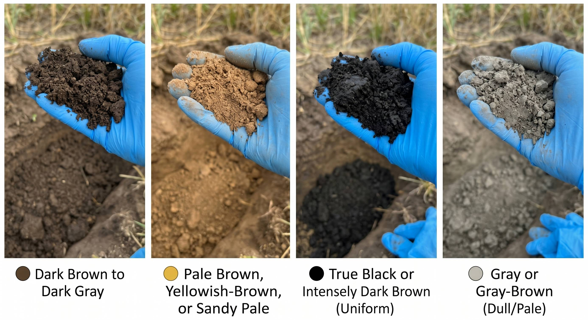

เงื่อนไขหลัก: พบก้อนปูนสีขาว หรือเศษหินปูนปะปน
ผลประเมิน: ดินตื้นที่เกิดจากหินปูน
ธงเตือน: ดินเป็นด่างสูง ตรึงฟอสฟอรัส หน้าแล้งดินแข็งตัวเร็ว
เงื่อนไขหลัก: เห็นเม็ดทรายปนในเนื้อดินค่อนข้างเยอะ
ผลประเมิน: ระบายน้ำดี แต่ไม่อุ้มน้ำ
ธงเตือน: เสี่ยงผลผลิตชะงักเมื่อฝนทิ้งช่วง ควรมีน้ำหยดหรือแหล่งน้ำสำรอง
เงื่อนไขหลัก: มีจุดประสีแดง ส้ม เหลือง และ/หรือก้อนศิลาแลง
ผลประเมิน: ดินลุ่มต่ำ หรือเคยมีน้ำแช่ขังนาน
ธงเตือน: เสี่ยงน้ำขังและโรคแส้ดำ ต้องยกร่องและทำทางระบายน้ำ
เงื่อนไขหลัก: ไม่มีจุดสังเกตพิเศษ และสีดำสนิท/น้ำตาลเข้มจัด
ผลประเมิน: ดินเหนียวหนักสีดำ ศักยภาพผลผลิตสูง
ธงเตือน: ระวังเครื่องจักรหนักลงแปลงช่วงดินชื้น เพราะดินแน่นและรถติดหล่มง่าย